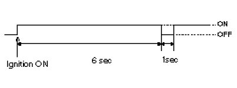
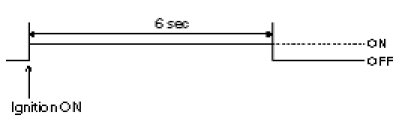
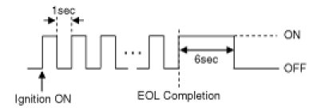
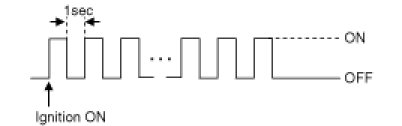
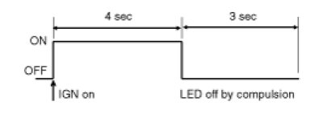

Restraints and Safety Systems: Description and Operation: Description And Operation
Warning Lamp Activation
Warning Lamp Behavior after Ignition On
As soon as the operating voltage is applied to the SRSCM ignition input, the SRSCM activates the warning lamp for a LED lamp check.
The lamp shall turn on for 6 seconds during the initialization phase and be turned off afterward.
To alert the driver, the warning lamp shall turn on for 6 seconds and off for one second then on continuously after the operating voltage is applied if any active fault exists.
1. Active fault or historical fault counter is greater or equal to 10.

2. Normal or historical fault counter is less than 10.

3. When turning the ignition switch ON during variant coding (EOL) mode, the airbag warning lamp is turned on and blinks at intervals of 1 second till the coding is completed.
If the variant coding is completed normally, the airbag warning lamp will turn on for 6 seconds, and then turned off. Otherwise the airbag warning lamp continuously blinks at intervals of 1 second.
(1) In case the variant coding is normally completed

(2) In case the variant coding is not completed

When there is active fault in airbag system or SRSCM internal fault, the variant coding (EOL) cannot be completed. In this case, perform the variant coding (EOL) procedure again after troubleshooting with the GDS.
SRSCM Independent Warning Lamp Activation
There are certain fault conditions in which the SRSCM cannot function and thus cannot control the operation of the standard warning lamp. In these cases, the standard warning lamp is directly activated by appropriate circuitry that operates independently of the SRSCM. These cases are:
1. Loss of battery supply to the SRSCM : warning lamp turned on continuously.
2. Loss of internal operating voltage : warning lamp turned on continuously.
3. Loss of Microprocessor operation : warning lamp turned on continuously.
4. SRSCM not connected : warning lamp turned on continuously.
Telltale Lamp Activation
The Telltale Lamp indicates the Passenger Airbag(PAB) enabled and disabled status based on occupant status of passenger seat. If the passenger seat is empty or occupied with child (or child seat), the Passenger Airbag is disabled and the Telltale Lamp is turned ON to inform the driver that the PAB is disabled. As soon as operating voltage is applied to the SRSCM ignition input, the SRSCM activates telltale lamp prove out. ODS (Occupant Detection System) will send an indeterminate status to the SRSCM as a default setting for passenger airbag deployment during the prove out period.
After ignition on, telltale lamp will turn on for 4 seconds and turn off for 3 seconds during the initialization phase and be turned NO afterward until receipt of valid enabled message from ODS system.
